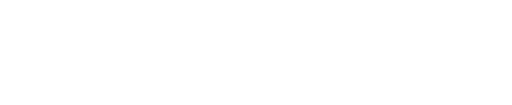

Professionally connected with the software development industry and information technology for many years.
Well-organised person, problem solver, independent employee with high attention to detail. Fan of music, outdoor activities, TV series and, recently, pickup hockey.
Interested in the entire full stack spectrum and working on ambitious projects with positive people.
